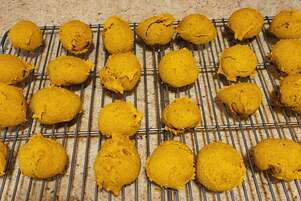

Iced Pumpkin Cookie Recipe

The Best Iced Pumpkin Cookie You Will Find!
The perfect blend of sugar, spice and everything nice. These cookies will melt in your mouth and
leave you wanting for more. If you don't like these cookies then I do not know how to help you!
The perfect cookie only exists from this recipe. I cannot imagine taht you would find a better recipe anywhere else
If you decide to change anything then you should definitely not take out any pumpkin or icing. That's the best part!
Ingredients
- 2 1/2 cups all-purpose flour
- 1 teaspoon baking powder">
- 1 teaspoon baking soda
- 2 teaspoons ground Cinnamon
- 1/2 teaspoon ground nutmeg
- 1/2 teaspoon ground cloves
- 1/2 teaspoon salt
- 1/2 cup softened butter
- 1 1/2 cups white sugar
- 1 cup canned pumpkin puree
- 1 egg
- 1 teaspoon vanilla extract
- 2 cups confectioners' sugar
- 3 tablespoons milk
- 1 tablespoon melted butter
- 1 teaspoon vanilla extract
Instructions
-
Preheat oven to 350 degrees F (175 degrees C). Combine flour,
baking powder, baking soda, cinnamon, nutmeg, ground cloves,
and salt; set aside.
-
In a medium bowl, cream together the 1/2 cup of butter and
white sugar. Add pumpkin, egg, and 1 teaspoon vanilla to
butter mixture, and beat until creamy. Mix in dry ingredients.
Drop on cookie sheet by tablespoonfuls; flatten slightly.
-
Bake for 15 to 20 minutes in the preheated oven. Cool cookies,
then drizzle glaze with fork.
-
To Make Glaze: Combine confectioners' sugar, milk, 1 tablespoon
melted butter, and 1 teaspoon vanilla. Add milk as needed,
to achieve drizzling consistency.